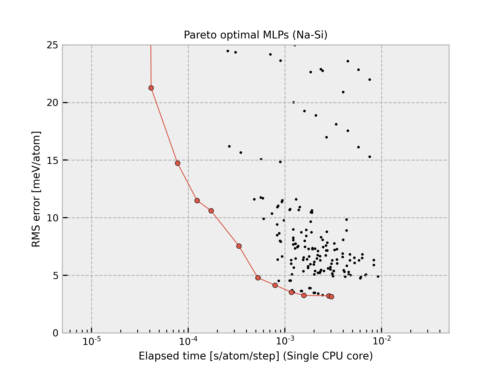

Tl-2020-05-28-dataset-3000-common6¶
{kind=link}
The current structure dataset is composed of 3,000 structures generated from six simple structures (FCC, BCC, HCP, simple cubic, omega, beta-Sn types). A more detailed procedure is found in J. Chem. Phys. 148, 234106 (2018). The procedure to estimate interatomic potentials from the dataset is found in Phys. Rev. B 99, 214108 (2019) and Phys. Rev. B 102, 174104 (2020).
All Pareto optimal MLPs are available
here.
Name |
Time [ms] (1 core / 36 cores) |
RMSE [meV/atom] / [eV/ang.] |
|---|---|---|
pair-1 |
0.014 / 0.005 |
65.903 / 0.0455 |
pair-15 |
0.021 / 0.005 |
58.053 / 0.0341 |
pair-8 |
0.021 / 0.006 |
56.074 / 0.0411 |
pair-29 |
0.029 / 0.039 |
54.735 / 0.0392 |
pair-3 |
0.031 / 0.009 |
11.885 / 0.0484 |
pair-16 |
0.032 / 0.007 |
6.9878 / 0.0274 |
pair-23 |
0.049 / 0.010 |
5.0602 / 0.0198 |
pair-44 |
0.050 / 0.009 |
4.3618 / 0.0191 |
pair-24 |
0.052 / 0.012 |
2.8320 / 0.0173 |
pair-25 |
0.068 / 0.014 |
2.1289 / 0.0154 |
pair-26 |
0.094 / 0.019 |
1.9730 / 0.0153 |
pair-46 |
0.099 / 0.019 |
1.6006 / 0.0136 |
pair-53 |
0.129 / 0.022 |
1.4273 / 0.0133 |
pair-47 |
0.132 / 0.019 |
1.3058 / 0.0129 |
pair-48 |
0.175 / 0.026 |
1.0871 / 0.0130 |
pair-49 |
0.222 / 0.033 |
1.0132 / 0.0126 |
pair-55 |
0.223 / 0.027 |
0.9239 / 0.0122 |
pair-56 |
0.290 / 0.035 |
0.8336 / 0.0117 |
gtinv-474 |
0.684 / 0.062 |
0.7912 / 0.0115 |
gtinv-356 |
2.153 / 0.115 |
0.7601 / 0.0072 |
gtinv-462 |
2.160 / 0.110 |
0.7531 / 0.0071 |
gtinv-463 |
2.286 / 0.124 |
0.7337 / 0.0069 |
gtinv-441 |
3.343 / 0.165 |
0.6222 / 0.0066 |
gtinv-442 |
3.437 / 0.169 |
0.6007 / 0.0061 |
gtinv-469 |
3.895 / 0.189 |
0.5944 / 0.0062 |
gtinv-470 |
4.021 / 0.193 |
0.5694 / 0.0058 |
gtinv-287 |
6.461 / 0.302 |
0.5680 / 0.0073 |
gtinv-365 |
6.474 / 0.313 |
0.5679 / 0.0073 |
gtinv-475 |
6.478 / 0.304 |
0.5581 / 0.0072 |
gtinv-476 |
6.585 / 0.317 |
0.5518 / 0.0057 |
gtinv-477 |
6.740 / 0.313 |
0.5374 / 0.0054 |
gtinv-479 |
21.433 / 0.910 |
0.5368 / 0.0054 |
gtinv-480 |
21.662 / 0.920 |
0.5263 / 0.0052 |
Column “Time” shows the time required to compute the energy and forces for 1 MD step and 1 atom, which is estimated from a simulation of 10 runs for a structure with 284 atoms using a workstation with Intel(R) Xeon(R) CPU E5-2695 v4 @ 2.10GHz. Note that the MLPs should be carefully used for extreme structures. The MLPs often return meaningless values for them.